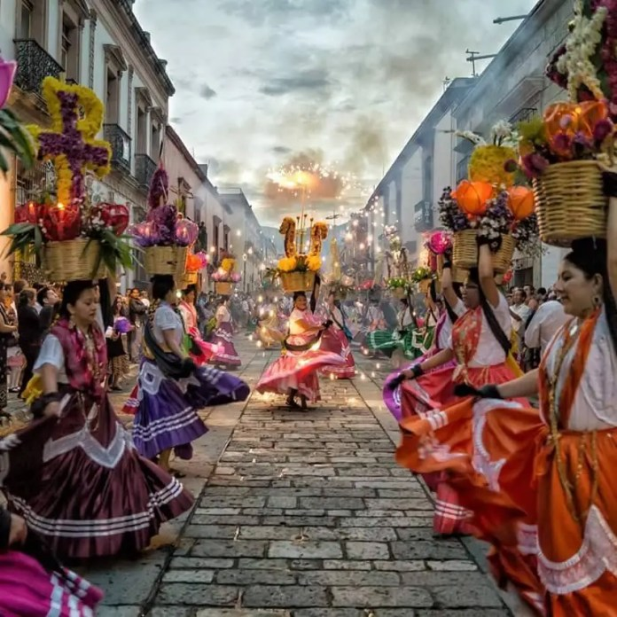

Andador Turístico
Entry: Free
Age: Adults
Colorful lane with restaurants & craft markets, plus street art & a contemporary art museum.
Expendio Tradición
Entry: Free
Age: Adults 18+
Trendy fixture for traditional & reimagined Mexican dishes, plus adventurous mezcal cocktails.

Zona Arqueológica de Monte Albán
Entry: Free
Age: Any
Historic archaeological center, founded in 500 B.C., with a museum, restaurant & handicrafts.
Mercado 20 de Noviembre
Entry: Free
Age: Any
Busy traditional covered market with stalls for fresh produce, baked goods & local street foods.

Templo de Santo Domingo de Guzmán
Entry: Free
Age: Any
The Church and former monastery of Santo Domingo de Guzmán is a Baroque ecclesiastical building
complex in Oaxaca, Oaxaca, Mexico. The complex includes a substantial sanctuary and an extensive system
of courtyards, cloisters and rooms that formerly constituted the monastery
Zócalo Oaxaca
Entry: Free
Age: Any
Small, busy public square surrounded by restaurants, vendors & historic buildings.
Feria de Mezcal (Mezcal Festival)
Entry: $25+
Age: Adults: 18+
Mexico's national Feria del Mezcal was a small tasting and promotional exposition. Organizers wisely
arranged for it to coincide with the yearly Guelaguetza festivities in Oaxcaca. The mid-summer merriment
is filled with unrivalled pageantry and a diversity of dance, costume, music, food and other indicia of
the rich cultural traditions for which Oaxaca is known. Hence, at this time of year Oaxaca becomes a
Mecca for tourists visiting from all corners of the globe.

Guelaguetza
Entry: $50+
Age: Any
An annual indigenous cultural event in Mexico that takes place in the city of Oaxaca, capital of the
state of Oaxaca, and nearby villages. The celebration features traditional costumed dancing by
gender-separated groups.
Casa Oaxaca el Restaurante
Entry: $45+
Age: Any
Modern Oaxacan dishes made with organic vegetables & free-range meat, served on a stylish patio.